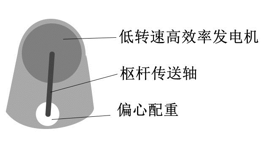
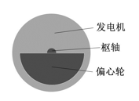
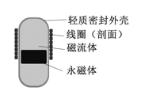

无尽装备能源系统――波浪能枢轴发电 [二人小组：张恒翔，陈祥] |
目前人类广泛使用便携式电子产品，例如手机，笔记本电脑，智能手表等。这些用电器电池容量较小，致使工作时间短，如果外出远行人们必须携带充电宝等笨重的蓄电设备。无尽装备能源系统的目标是对人体周围耗散的能量进行回收再利用，对电子产品进行有效充电，使人们摆脱携带蓄电池的困扰。在设计项目阶段考虑过太阳能、势能、热能三方面。 |
|
|  | 项目的初步第一设想是将低转速高效率发电机小型化，该种发电机发电功率在10kw-50kw，并且在较低转速下拥有更高发电效率。目前该种发电机应用于风力发电机组与新能源汽车中。我们计划在发电系统下方挂磁流体发电机作为配重加大功率和效率，利用偏心轴对人体行走时腿部的势能损耗进行有效利用。 |
第二设想是使用类似automatic机械表的发电方式，与上述方式原理相同，节约发电部分的体积，利于携带。 |
 |
 |
第三设想是将一个中空的柱形容器内注入悬浊状态的磁流体（纳米级铁粒子），再放置一个镀镍的钕铁硼永磁体与其中。在封闭的容器外缠绕线圈，切割内部磁体的磁力线从而产生感应电流。目前AMPY移动电源采用相同原理，但不使用磁流体。跑步1h可以提供5h的智能手机用电。 |
该发电组将被装在人的小腿上，对于运动爱好者和普通人可以考虑不同的配重、体积来达到最符合人体工学和高舒适度的效果。项目预计能达到供电压为3.5V-15V，目标是正常行走4h给手机电池（3000mAh~4000mAh）充满电。 |